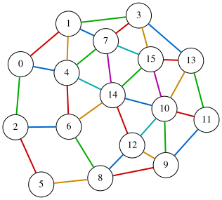

Graph Edge Coloring Problem
Given an undirected graph $G=(V,E)$, the graph edge coloring problem aims to assign a color to each edge so that no two edges of the same color share a common endpoint.
More specifically, for a set $C$ of colors, the goal is to find an assignment $\sigma:E\rightarrow C$ such that for any two distinct edges $𝑒$ and $e’$ incident to the same node, we have $\sigma(e)\neq \sigma(e’)$. Equivalently, for every node $u\in V$ and any two distinct neighbors $v\neq v’$ with $(u,v)\in E$ and $(u,v’)\in E$ the following must hold:
\[\sigma((u,v))\neq \sigma((u,v')).\]The graph edge coloring problem can be formulated easily as a QUBO expression. Let $V=\lbrace 0,1,\ldots,n−1\rbrace$ and $C=\lbrace 0,1,\ldots,m−1\rbrace$. We assign unique IDs $0,1,\ldots,e−1$ to the $e=∣E∣$ edges, and let $(u_i,v_i)$ denote the $i$-th edge.
We introduce an $e\times m$ matrix $X=(x_{i,j})$ of binary variables, where $x_{i,j}=1$ if and only if edge $(u_i,v_i)$ is assigned color $j$.
One-hot constraint
Since exactly one color must be assigned to each edge, each row of $X$ must be one-hot:
\[\begin{aligned} \text{onehot}&= \sum_{i=0}^{e-1}\bigr(\sum_{j=0}^{m-1}x_{i,j}==1\bigl)\\ &=\sum_{i=0}^{e-1}\bigr(1-\sum_{j=0}^{m-1}x_{i,j}\bigl)^2 \end{aligned}\]Incident edges must differ
For each node, any pair of distinct incident edges must not be assigned the same color. This can be penalized as follows:
\[\begin{aligned} \text{different}&= \sum_{u\in V}\sum_{\substack{i<k\\ i,k\in I(u)}}x_u\cdot x_v\\ &=\sum_{u\in V}\sum_{\substack{i<k\\ i,k\in I(u)}}\sum_{j=0}^{m-1}x_{u,j}x_{v,j} \end{aligned}\]where $I(u)\subseteq \lbrace 0,1,\ldots,e−1\rbrace$ denotes the set of edge IDs incident to node $u$.
QUBO objective
By combining these expressions, we obtain the QUBO objective function:
\[\begin{aligned} f &= \text{onehot}+\text{different} \end{aligned}\]This objective attains the minimum value 0 if and only if a valid edge coloring of the graph exists.
QUBO++ formulation
It is known that the edge chromatic number of a simple graph is either $\Delta$ or $\Delta+1$, where $\Delta$ is the maximum degree of the graph. The following QUBO++ program attempts to find an edge coloring of a graph with $n$ nodes and $s$ edges using $m=\Delta$ colors:
#include "qbpp.hpp"
#include "qbpp_easy_solver.hpp"
#include "qbpp_graph.hpp"
int main() {
const size_t n = 16;
std::vector<std::pair<size_t, size_t>> edges = {
{0, 1}, {0, 2}, {0, 4}, {1, 3}, {1, 4}, {1, 7}, {2, 5},
{2, 6}, {3, 7}, {3, 13}, {3, 15}, {4, 6}, {4, 7}, {4, 14},
{5, 8}, {6, 8}, {6, 14}, {7, 14}, {7, 15}, {8, 9}, {8, 12},
{9, 10}, {9, 11}, {9, 12}, {10, 11}, {10, 12}, {10, 13}, {10, 14},
{10, 15}, {11, 13}, {12, 14}, {13, 15}, {14, 15}};
std::vector<std::vector<size_t>> adj(n);
for (size_t i = 0; i < edges.size(); ++i) {
const auto& [u, v] = edges[i];
adj[u].push_back(i);
adj[v].push_back(i);
}
size_t max_degree = 0;
for (const auto& neighbors : adj) {
if (neighbors.size() > max_degree) {
max_degree = neighbors.size();
}
}
const size_t m = max_degree;
const size_t s = edges.size();
auto x = qbpp::var("x", s, m);
auto onehot = qbpp::sum(qbpp::vector_sum(x) == 1);
auto different = qbpp::Expr(0);
for (size_t i = 0; i < n; ++i) {
for (auto u : adj[i]) {
for (auto v : adj[i]) {
if (u < v) {
different += qbpp::sum(x[u] * x[v]);
}
}
}
}
auto f = onehot + different;
f.simplify_as_binary();
auto solver = qbpp::easy_solver::EasySolver(f);
solver.target_energy(0);
auto sol = solver.search();
std::cout << "colors = " << m << std::endl;
std::cout << "onehot = " << sol(onehot) << std::endl;
std::cout << "different = " << sol(different) << std::endl;
auto edge_color = qbpp::onehot_to_int(sol(x));
qbpp::graph::GraphDrawer graph;
for (size_t i = 0; i < n; ++i) {
graph.add_node(qbpp::graph::Node(i));
}
for (size_t i = 0; i < edges.size(); ++i) {
const auto& e = edges[i];
graph.add_edge(qbpp::graph::Edge(e.first, e.second)
.color(edge_color[i] + 1)
.penwidth(2.0f));
}
graph.write("edge_color.svg");
}
In this program, we first build the incidence list adj, where adj[i] stores the indices of edges incident to node i.
We then compute the maximum degree $\Delta$ and set m=$\Delta$.
Next, we define an s$\times$m matrix x of binary variables, where x[i][j]=1 means that edge i is assigned color j.
We construct the expressions onehot, different, and f as follows:
onehotenforces that each edge is assigned exactly one color.differentpenalizes pairs of edges that share an endpoint and are assigned the same color.f = onehot + differentis the QUBO objective, which attains the minimum value 0 if and only if a validm-edge-coloring is found.
We solve the resulting QUBO using the Easy Solver with target energy 0, and store the solution in sol. We then print the values of onehot and different evaluated at sol.
We also compute edge_color, which stores the color assigned to each edge, by applying qbpp::onehot_to_int() to sol(x).
Finally, we draw the edge-colored graph using qbpp::graph::GraphDrawer, where edge i is colored with color number edge_color[i] + 1.
The function qbpp::onehot_to_int() returns a vector of integers in the range [0,m−1], where each entry indicates the position of the 1 in the corresponding one-hot row. If a row is not a valid one-hot vector, the function returns $−1$ for that row. In this case, the edge color becomes $−1+1=0$, so the edge is drawn in color 0 (black).
This program produces the following output:
colors = 6
onehot = 0
different = 0
Therefore, a valid edge coloring using m = 6 colors is found:
